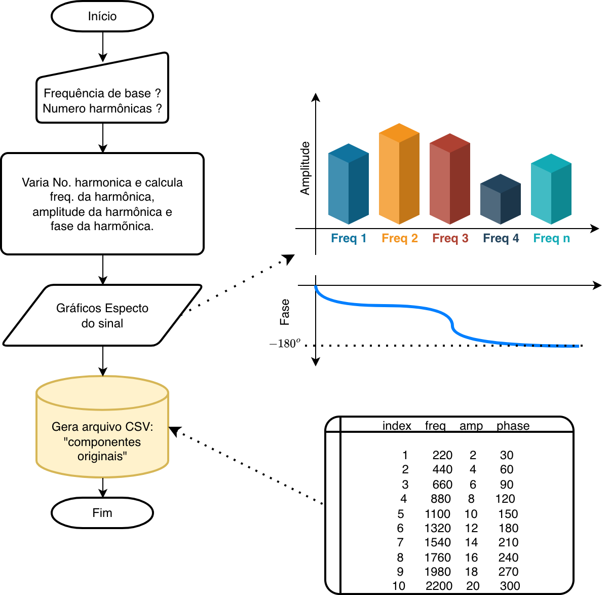
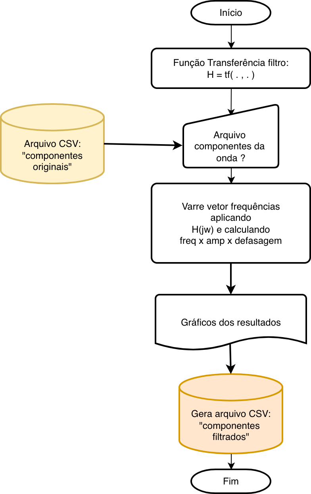
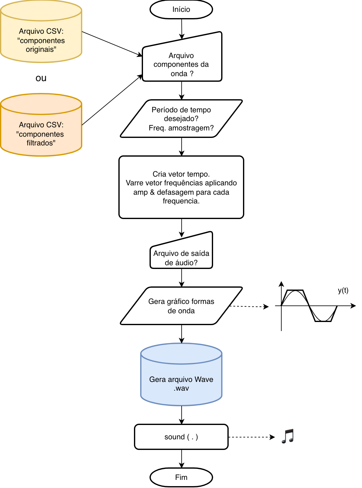

Sugere-se criar diferentes rotinas capazes de processar dados contidos em arquivos do tipo .csv (que podem ser editados à mão, em planilhas eletrônicas, etc).
Note que o trabalho exige uma sequência de operações:
Cálculo dos componentes de uma onda, envolvendo: harmônica, frequência, amplitude e fase, gerando uma matriz ou tabela de dados da "componentes originais".
Calcular a atenuação e defasagem introduzida em componente frequencial. Isto significa ler os dados da matriz ou tabela de dados da "componentes originais" e com base na função transferência do filtro, calcular nova matriz ou tabela dados "componentes originais".
Sintetizar um vetor temporal baseado nos componentes espectrais das mesma, usando a matriz ou tabela de dados "componentes originais" para gerar/mostrar a "onda original" e usar a mesma rotina mas usando dados da matriz ou tabela de dados "componentes filtrados" para gerar/mostrar a "onda filtada".
Graficamente resultaria algo como:
Etapa de sintetizar os componentes da onda:

Etapa de atuação do filtro:

Dica: Para saber como aplicar nas diferentes frequências que compõem certa onda, seugere-se uma visita ao item Anexo i. Cálculo de Ganhos de Defasagens em Trabalho sobre Diagramas de Bode (avaliação 2025/1).
Etapa de síntese da forma de onda de saída do filtro:

Acredita-se que esta proposta seja mais modular e traga mais flexibilidade para realizar o trabalho independente da onda e filtro adotado.
➠ Para saber mais criação e uso de arquivos CSV no Matlab clique [aqui] .
Mais referências:
Site gerador de tons: miniWebtool > Gerador de Tom: gera ondas senoidas, quadradas, triangulares e dente de serra entre 1 Hz à 20 KHz. Acompanha espectro da onda gerada.
Site gerador de tons: VeliroTools > Gerador de Tom (Frequência): gera ondas senoidas, quadradas, triangulares e dente de serra, mostrando notas musicas e permitindo definir duração do tom. Não mostra espectro da onda gerada.